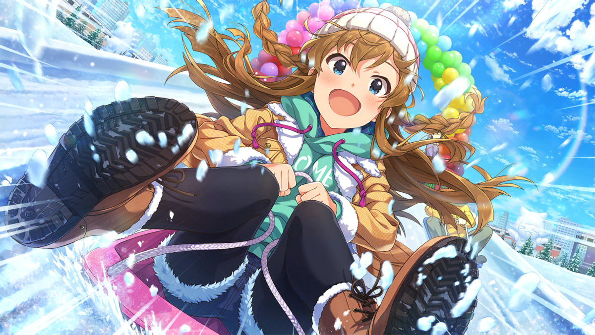

Biographies
Umi is a an athletic girl who excels at almost every sport. She has a very energetic personality to the point
that
she cannot stand being inactive. Umi is not only good with active sports like football or basketball; she is
also
good
with gymnastics, and she took ballet lessons when she was younger.
All of this made her body very flexible. While she is a sporty girl, she's definitely not a tomboy and she's
happy
to wear cute dresses.
Blog Posts
Keep up to date with what Kousaka Umi's activities!
Full of energy even in winter!

Wow... This slope looks pretty steep from above! No, it's not scary, I'm really looking forward to it♪
All right, let's go! Ready... Yay!!!
Flowing float♪
Yay, I got somen noodles! Ah, there are pink somen noodles inside! It's like girly somen noodles!
I feel excited☆ Will eating them increase my appeal? Alright... Minachin, keep on washing!
New Year's Happiest Girl

This dress is cute, isn't it...? I can't put it on by myself,
it's hard work, but it makes me feel like a true princess! ☆Hey! It suits me pretty well, doesn't
it...?
Big Waaave!!
Hehehe... Everyone, your engines are starting up!
It feels great☆ I'm going to get pumped up too and go all out! Now, let's surf, Umimin!